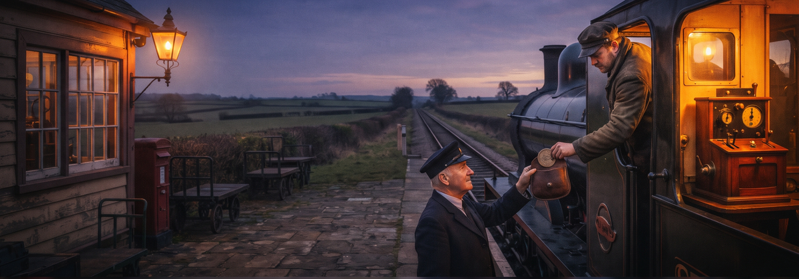

The Token Exchange. A command line tool that searches Python source for the two halves of CSRF token handling: a place where the token is generated, and a place where it is checked.
The token name and form field each default to csrf_token. Both names are placed into the search patterns as raw pattern text, so each must be a plain identifier, a letter or underscore followed by letters, digits, or underscores; any other shape is refused with an error and exit 1. The findings are logged and nothing more is done with them.
Option
What it does
source_code_path
The file or directory tree to search. Required.
--token_name
The token variable name to look for. Default csrf_token.
--form_field
The form field name to look for. Default csrf_token.
--exclude
Files or directories to leave out of a tree search.

The exchange on the platform: nothing passes until the token changes hands.
What the search does not prove
This is a spelling search. A match means the pattern's shape exists in the text; no token is generated, compared at runtime, or measured for strength.
A directory run pools the two findings across the whole tree, so generation in one file and validation in another reads as both present even when no single file does both halves.
The exit code never distinguishes a clean file from a file with no CSRF logic at all: both exit 0.
The GitHub description's word Verifies overstates the tool; the site states the plainer fact, that the tool searches for the shapes.
Requirements
Python, standard library only. The requirements file says so in a comment and lists nothing to install.